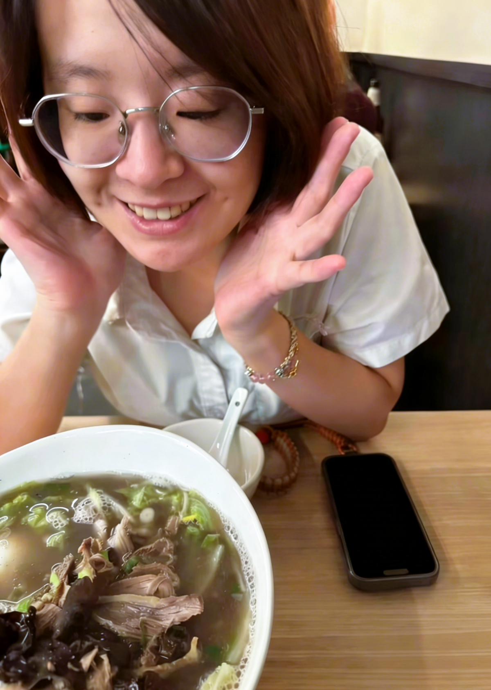
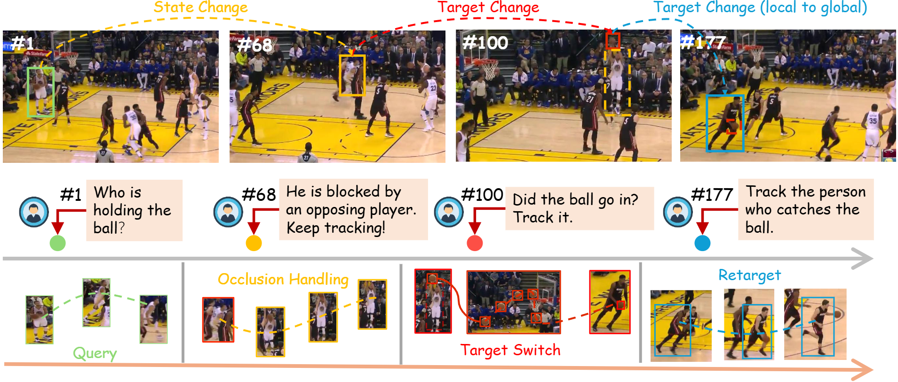
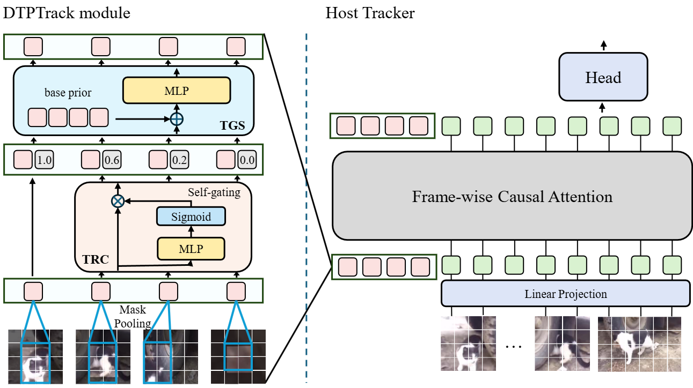
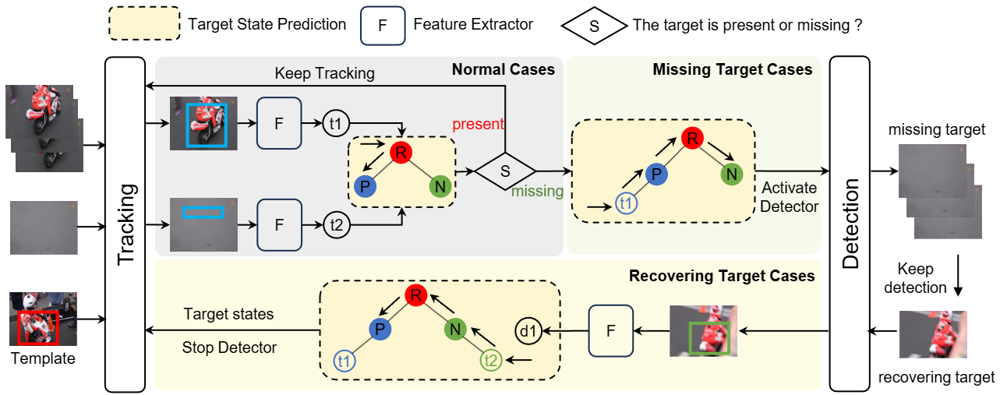
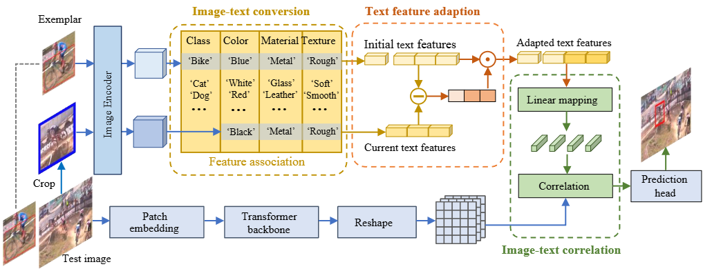
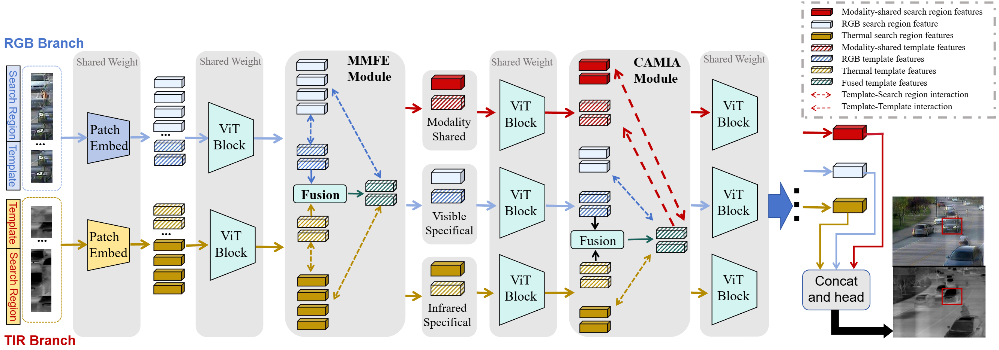

|
Yuqing Huang (黄域青)
I am a Ph.D. Candidate at Harbin Institute of Technology, Shenzhen, advised by Prof. Zhenyu He and Dr. Xin Li. I am also a Joint Ph.D. Student at Pengcheng Laboratory. Additionally, I am co-advised by Prof. Ming-Hsuan Yang.
Prior to this, I received my Master of Science degree in Computer Science from The University of Hong Kong (HKU) in 2021, and my Bachelor's degree in Software Engineering from Xiamen University in 2019.
My research interests focus on Computer Vision, Visual Tracking, Multimodal Learning, Embodied AI, and Multimodal Large Language Models (MLLMs).
Email /
Google Scholar /
Github
|

|
|
Selected Publications
(* indicates equal contribution)
|
|

|
Interactive Tracking: A Human-in-the-Loop Paradigm with Memory-Augmented Adaptation
Yuqing Huang*, Guotian Zeng*, Zhenqiao Yuan, Zhenyu He, Xin Li, Yaowei Wang, Ming-Hsuan Yang
CVPR, 2026
pdf
|
|

|
Drift-Resilient Temporal Priors for Robust Visual Tracking
Yuqing Huang, Liting Lin, Weijun Zhuang, Zhenyu He, Xin Li
CVPR, 2026
pdf
|
|

|
RTracker: Recoverable Tracking via PN Tree Structured Memory
Yuqing Huang, Xin Li, Zikun Zhou, Yaowei Wang, Zhenyu He, Ming-Hsuan Yang
CVPR, 2024
pdf
|
|

|
CiteTracker: Correlating Image and Text for Visual Tracking
Xin Li*, Yuqing Huang*, Zhenyu He, Yaowei Wang, Huchuan Lu, Ming-Hsuan Yang
ICCV, 2023
pdf
|
|

|
Simplifying Cross-modal Interaction via Modality-Shared Features for RGBT Tracking
Liqiu Chen*, Yuqing Huang*, Hengyu Li, Zikun Zhou, Zhenyu He
ACM MM, 2024
pdf
|
Experience
- Research Assistant at SUSTech (Dec. 2021 - Jun. 2022)
- Development Engineer Intern at Alibaba (Jul. 2021 - Nov. 2021)
Service
- Journal Reviewer: IEEE TMM, IEEE TCSVT
- Conference Reviewer: CVPR, ICCV, NeurIPS, ICML, ICLR, AAAI
Selected Honors
- National Scholarship, Ministry of Education, P.R. China, 2025.
- Outstanding PhD Students, Harbin Institute of Technology, Shenzhen, 2023-2025.
- Academic Excellence Scholarship Xiamen University, 2017–2019.
|
|
{kind=link}